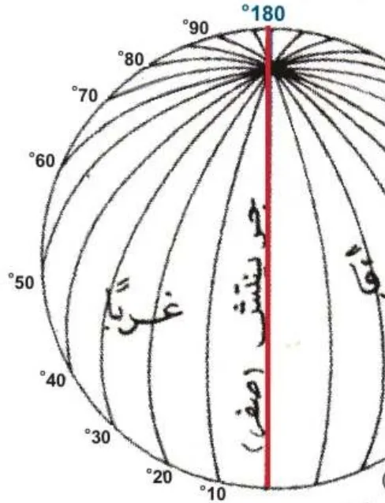

بِطاقَةُ الْمَصادِرِ وَالْمَفاهيمِ: رِحْلَةُ الْمَعْرِفَةِ
الدِّراساتُ الِاجْتِماعِيَّةُ · الصَّفُّ الرّابِعُ · ص 14–15
لِلْجَميعِ

الْمَوْقِعُ الْجُغْرافِيُّ مَوْقِعُ جِسْمٍ عَلى سَطْحِ الْأَرْضِ، وَخُطوطُ الطّولِ خُطوطٌ وَهْمِيَّةٌ عَلى شَكْلِ أَنْصافِ دَوائِرَ تَصِلُ بَيْنَ الْقُطْبَيْنِ عَدَدُها 360 (180 شَرْقًا وَ180 غَرْبًا)، وَخَطُّ جْرينِتْشَ هُوَ خَطُّ الصِّفْرِ يُقَسِّمُ الْعالَمَ شَرْقًا وَغَرْبًا، وَتُفيدُ في تَحْديدِ الْمَواقِعِ وَالزَّمَنِ (كُلُّ 15 خَطًّا = ساعَةٌ).📖 أَقْرَأُ النَّصَّ
الْمُعَلِّمُ: تَعالَ مَعي سَيُرينا رائِدُ الْمَكوكِ صُوَرًا عَبْرَ الشّاشَةِ لِكَوْكَبِ الْأَرْضِ تُساعِدُنا في تَحْديدِ الْمَوْقِعِ الْجُغْرافِيِّ أَيْ مَوْقِعِ جِسْمٍ ما عَلى سَطْحِ الْكُرَةِ الْأَرْضِيَّةِ. مَنْصورٌ: مُعَلِّمي الْفاضِلُ، ما هٰذِهِ الْخُطوطُ الَّتي أَراها؟! الْمُعَلِّمُ: إِنَّها خُطوطُ الطّولِ وَهِيَ خُطوطٌ وَهْمِيَّةٌ عَلى شَكْلِ أَنْصافِ دَوائِرَ تَصِلُ بَيْنَ الْقُطْبَيْنِ. وَتُقَسَّمُ الْأَرْضُ إِلى (360) خَطَّ طولٍ، (180) خَطًّا شَرْقِيًّا، وَ(180) خَطًّا غَرْبِيًّا، تُساعِدُنا عَلى تَحْديدِ الْمَوْقِعِ الْفَلَكِيِّ وَهُوَ مَوْقِعُ الْمَكانِ بِالنِّسْبَةِ لِخُطوطِ الطّولِ وَدَوائِرِ الْعَرْضِ. لاحِظْ يا بُنَيَّ الْخَطَّ الْأَحْمَرَ، وَهُوَ خَطُّ جْرينِتْشَ، وَهُوَ خَطُّ الطّولِ الرَّئيسُ (خَطُّ الصِّفْرِ) وَيُقَسِّمُ الْعالَمَ إِلى نِصْفَيْنِ مُتَساوِيَيْنِ (نِصْفٍ شَرْقِيٍّ وَآخَرَ غَرْبِيٍّ). مَنْصورٌ: نَعَمْ يا مُعَلِّمي، لَقَدْ قَسَّمَها إِلى نِصْفَيْنِ، وَما فائِدَةُ خُطوطِ الطّولِ يا مُعَلِّمي؟ الْمُعَلِّمُ: فائِدَةُ خُطوطِ الطّولِ أَنَّها تُساعِدُنا في تَحْديدِ الْمَواقِعِ الْجُغْرافِيَّةِ وَالزَّمَنِ. نافِذَةُ الْمَعْرِفَةِ: مُنْذُ الْقِدَمِ يُحَدَّدُ الْمَوْقِعُ الْجُغْرافِيُّ بِواسِطَةِ مَعالِمَ بارِزَةٍ مَعْروفَةٍ لِلنّاسِ، وَمَعَ تَقَدُّمِ الزَّمَنِ ابْتَكَرَ الْعُلَماءُ طَريقَةً أَسْهَلَ وَأَدَقَّ وَهِيَ تَقْسيمُ الْأَرْضِ وَهْمِيًّا إِلى خُطوطٍ طولِيَّةٍ وَعَرْضِيَّةٍ.
كِتابي ص 14–15
📘 كَلِماتي
خُطوطُ الطّولِ
🌐
جْرينِتْشُ
🔴
الْمَوْقِعُ الْفَلَكِيُّ
🎯
الزَّمَنُ
🕐
💡 تَعَلَّمْتُ
🌍الْمَوْقِعُ الْجُغْرافِيُّ عَلى سَطْحِ الْأَرْضِ.
🌐خُطوطُ الطّولِ أَنْصافُ دَوائِرَ.
3️⃣6️⃣0️⃣عَدَدُها 360 خَطًّا.
🔴جْرينِتْشُ خَطُّ الصِّفْرِ.
✅ أُطَبِّقُ
☐أَرْسُمُ خُطوطَ الطّولِ عَلى كُرَةٍ.
☐أُكْمِلُ كِتابي ص 15.
🏅 ⭐ أَحْسَنْتَ